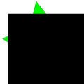

yy
ФавиконТег для подстановки изображения с фавиконом:
<link rel="icon" href="favicon.svg" type="image/svg+xml">
Подставить независимый фавикон svg в любое место раздела head. Так-же для подстраховки можно оставить в корневой директории сайта старый фавикон который определяться самостоятельно на всех страницах директории: favicon.ico. Таким образом если на странице не указан линк рел икон с путем изображения svg, будет отображаться фавикон ико.
Favicon svg подставляется в красивую иконку в браузере, помогает ориентироваться и понимать обозначение. Яндекс рекомендует использовать размеры 120*120 пикселей.
Сделать фавикон svg
С помощью векторного редактора в моем случае это inkscape потому что он бесплатный. ) на вкладке: File в разделе Document Properties… нужно указать размеры width:120px; и Height:120px;
После чего останется лишь написать информацию для отображения и можно со спокойной и чистой совестью получать поздравления. Все: Ваш фавикон готов!